Databaser intro
Kursstart: vad en relationsdatabas är, de centrala begreppen – och hur man ritar en ER-modell som hänger ihop med klasserna du redan kan i C#.
Introduktion
Hittills har all data i dina program levt i minnet – i variabler och listor. När programmet stängs är den borta.
List<Customer> customers = new List<Customer>();
customers.Add(new Customer { Name = "Ada" });
// Programmet avslutas … och Ada är bortaEn databas sparar data permanent, så att den finns kvar nästa gång programmet startar – och så att många användare och program kan dela på samma data.
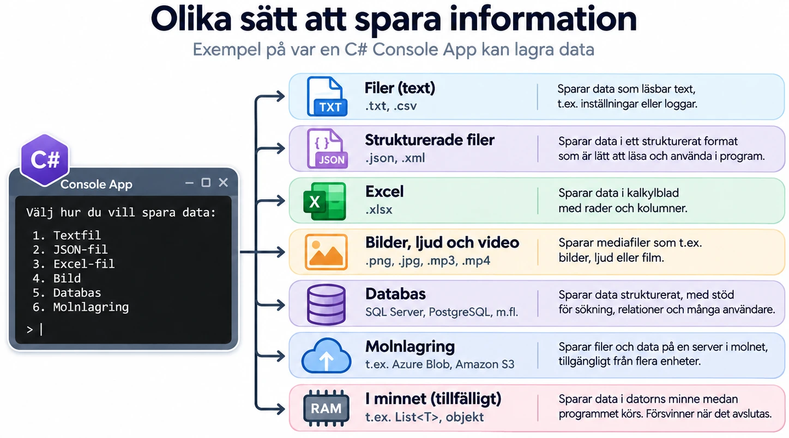
Har man alltid en databas när man jobbar med mjukvara?
Ja – nästan alltid.
- Data måste finnas kvar. Allt i RAM försvinner när programmet stängs – användare, ordrar och inställningar får inte göra det.
- Många använder samma data samtidigt. En webbshop, en bank eller ett socialt nätverk har tusentals användare som läser och skriver på en gång.
- Data ska kunna sökas och kopplas ihop. "Visa alla ordrar för Ada" eller "vilka böcker är utlånade?" – det är precis vad en databas är byggd för.
- Data är ofta det viktigaste. Koden kan skrivas om, men kunderna, ordrarna och betalningarna går inte att återskapa.
Även när du inte ser den finns den där: appen i mobilen pratar med ett API, och API:et pratar med en databas. Som utvecklare kommer du att jobba med databaser i nästan alla projekt.

Genomgång av kursplanering
| Vecka | Innehåll |
|---|---|
| 1 (v.48) | Relationsdatabaser, centrala begrepp och ER-diagram. Från modell till tabeller i SQL Server. |
| 2 (v.49) | Normalisering (1NF–3NF), constraints, CRUD och JOIN. |
| 3 (v.50) | Authentication och authorization, databasroller, minsta behörighet, SQL-injektion. |
| 4 (v.51) | EF Core: koppla en databas till en konsolapp och göra CRUD. Individuell inlämningsuppgift och muntlig delredovisning av ER-diagram. |
| 5 (v.53) | Projektarbete. |
Den här veckan:
| Dag | Innehåll |
|---|---|
| Måndag | Introduktion, relationsdatabaser, centrala begrepp, ER-diagram |
| Onsdag | Från modell till tabeller i SQL Server |
| Torsdag | Extralektion (digitalt): databasrader och C#-objekt |
| Fredag | Repetition, reflektion och kodgranskning |
Vi går också igenom kursplanen och betygskriterierna. Läs dem själv efter genomgången – då vet du redan från start vad som bedöms.
Veckans mål
Efter den här veckan ska du kunna:
- Förklara centrala databasbegrepp.
- Förstå ett ER-diagram.
- Skapa en lokal databas med tabeller och nycklar.
Idag jobbar vi med mål 1 och 2. Mål 3 kommer på onsdag.
Vad är en relationsdatabas?
En relationsdatabas sparar data i tabeller – ungefär som kalkylblad. Tabellerna kan kopplas ihop med varandra.
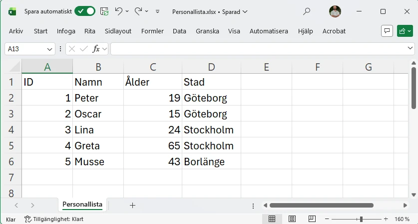
Excel liknar en databas. Arket är en tabell, varje rad är en person och varje kolumn är en egenskap – och ID-kolumnen skiljer raderna åt. Skillnaden är att en databas kopplar ihop många tabeller, kontrollerar vad som får stå i varje kolumn och låter många användare arbeta samtidigt.

Nyckel = ett värde som pekar ut en rad, t.ex. BokID. Samma BokID i Lån visar vilken bok som är lånad.
SQL = Structured Query Language – ett strukturerat frågespråk
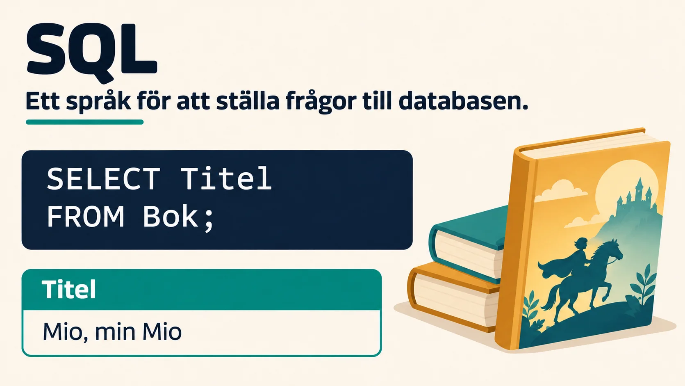
SELECT väljer vilka kolumner som ska hämtas – här Titel. FROM anger vilken tabell de hämtas från – här Bok.
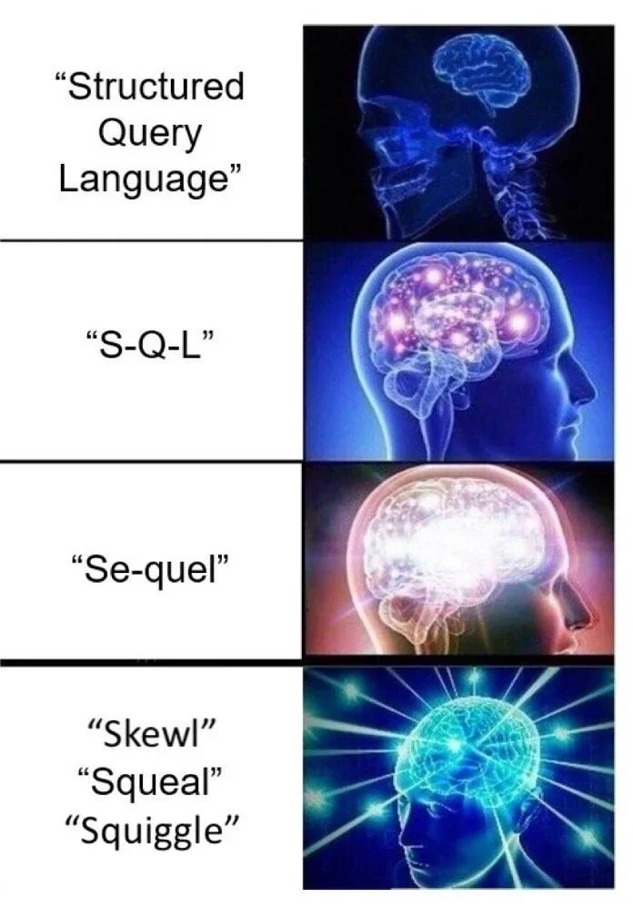
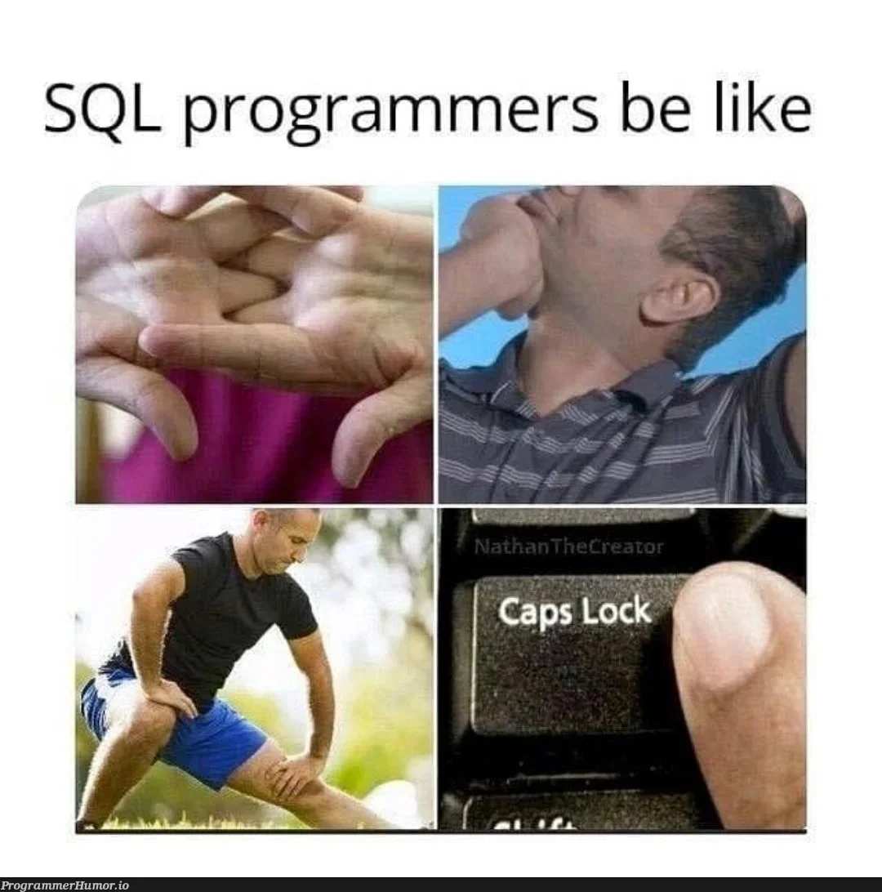
Hur uttalar man SQL? Både "es-kju-ell" och "sequel" är rätt. Språket togs fram av IBM på 1970-talet och hette först SEQUEL – därför säger många fortfarande "sequel", t.ex. "Sequel Server".
Varför Caps Lock? SQL bryr sig inte om stora eller små bokstäver i nyckelorden – select titel from bok fungerar lika bra som SELECT Titel FROM Bok. Men konventionen är att skriva nyckelorden med VERSALER, så att de syns tydligt mot tabell- och kolumnnamnen.
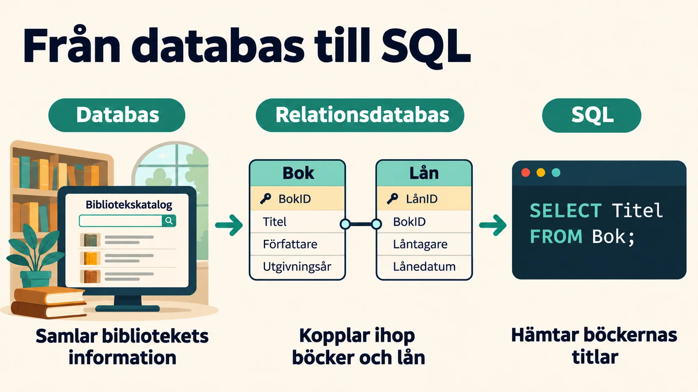
Centrala begrepp
| Begrepp | Betyder |
|---|---|
| Databas | En samling data som sparas permanent och hör ihop |
| DBMS | Database Management System (databashanterare) – programmet som lagrar och hämtar datan, t.ex. SQL Server |
| Tabell | Data om en sorts sak, t.ex. Customers |
| Rad (post) | En sak i tabellen, t.ex. kunden Ada |
| Kolumn (fält) | En egenskap som alla rader har, t.ex. Email |
| Relation | Hur saker i olika tabeller hänger ihop, t.ex. en kund och hennes ordrar |
| SQL | Språket man använder för att prata med databasen |
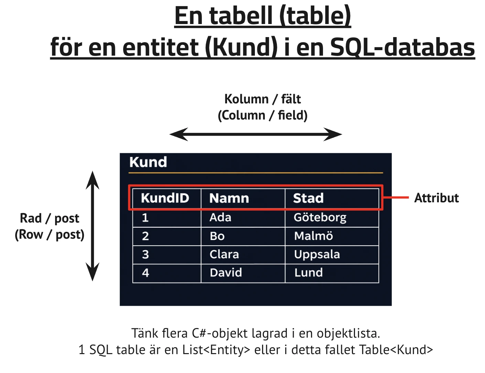
Vilka databaser används? – Stack Overflow Developer Survey 2026
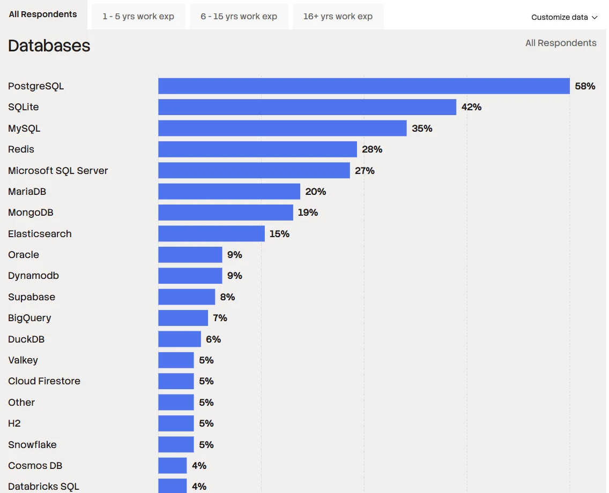
Andel av ca 12 000 utvecklare som har jobbat mycket med databasen det senaste året (man kunde välja flera). Vi använder Microsoft SQL Server i kursen – den är vanlig inom .NET och fungerar smidigt med C# och EF Core. Källa
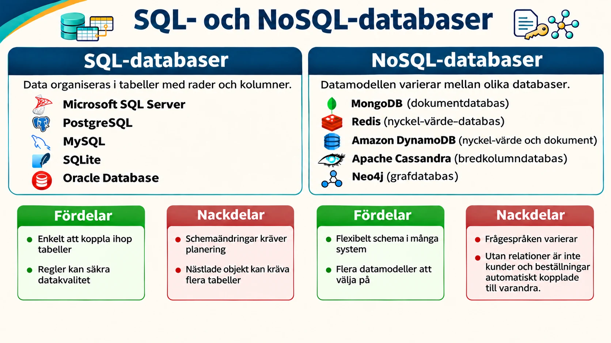
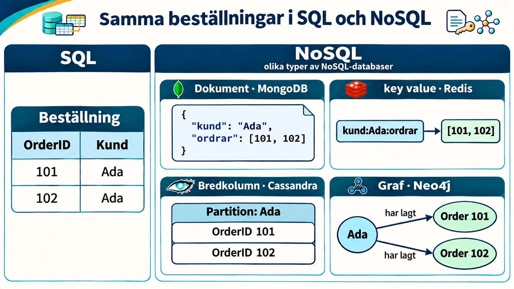
I den här kursen: SQL-databaser
Det finns många sorters databaser, men i den här kursen jobbar vi bara med SQL-databaser – relationsdatabaser med tabeller, rader och kolumner.
| Ingår i kursen | Ingår inte | |
|---|---|---|
| Typ | SQL-databaser (relationsdatabaser) | NoSQL-databaser |
| Exempel | SQL Server – det vi använder | MongoDB, Redis, Cosmos DB |
| Lagrar data som | Tabeller med relationer | Dokument, nyckel–värde, grafer … |
Det ni lär er – tabeller, nycklar, relationer och SQL – fungerar likadant i PostgreSQL, MySQL och SQLite. Vecka 4 kopplar vi SQL-databasen till C# med EF Core.
ER-diagram
Ett ER-diagram (Entity–Relationship) är en ritning av databasen innan man bygger den.
- Entitet (
Customer) – en sak vi sparar data om (blir en tabell) - Attribut (
Name) – egenskaper hos entiteten (blir kolumner) - Relation – hur entiteterna hänger ihop, med kardinalitet (1 eller många)
%%{init: {"er": {"layoutDirection": "LR"}}}%%
erDiagram
CUSTOMER ||--o{ ORDER : "lägger"
CUSTOMER {
int Id
string Name
string Email
}
ORDER {
int Id
date OrderDate
}
En rak linje betyder en, en kråkfot betyder många. Läs: en kund lägger många ordrar – varje order läggs av en kund.
De tre vanligaste datatyperna i SQL
Med de här tre kommer man långt – heltal, text och datum.
INTHeltal
C#: int
42
NVARCHAR(100)Text
C#: string
'Anna'
DATEDatum
C#: DateOnly / DateTime
'2026-11-23'
Datatyper i SQL
Varje kolumn har en datatyp som bestämmer vad som får stå i den – precis som varje egenskap i C# har en typ.
| SQL Server | Innehåller | C# | Exempel |
|---|---|---|---|
INT | Heltal | int | 42 |
BIGINT | Stora heltal | long | 9000000000 |
DECIMAL(10,2) | Exakta decimaltal, t.ex. pengar | decimal | 199.90 |
FLOAT | Ungefärliga decimaltal | double | 3.14159 |
NVARCHAR(100) | Text, högst 100 tecken, med å, ä, ö | string | N'Åsa' |
VARCHAR(100) | Text utan stöd för alla tecken | string | 'Ada' |
BIT | Sant eller falskt (1 eller 0) | bool | 1 |
DATE | Datum | DateOnly / DateTime | '2026-11-23' |
DATETIME2 | Datum och tid | DateTime | '2026-11-23 09:00' |
Siffran i NVARCHAR(100) är max antal tecken. Använd NVARCHAR för svensk text. En kolumn som får vara tom (NULL) motsvarar en nullbar typ i C#, t.ex. int?.
Tre sorters relationer
| Relation | Exempel |
|---|---|
| Ett till ett (1–1) | En person har ett pass |
| Ett till många (1–N) | En kund har många ordrar |
| Många till många (m–m) | En student läser många kurser, en kurs har många studenter |
Kardinalitet betyder antal – hur många av den ena saken som kan höra ihop med den andra (en eller många).
Fråga dig åt båda hållen: "Hur många ordrar kan en kund ha?" och "Hur många kunder kan en order ha?" Svaren ger kardinaliteten.
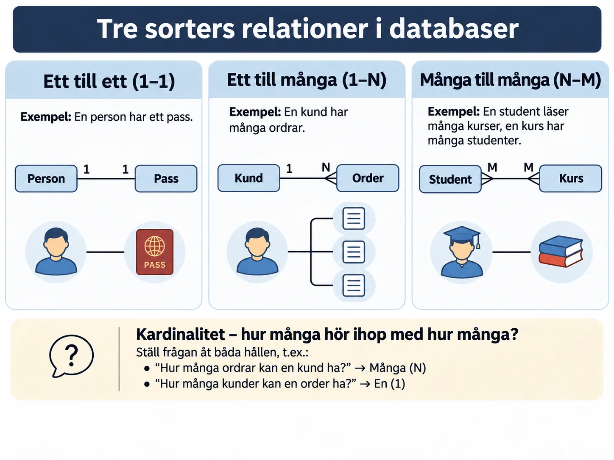
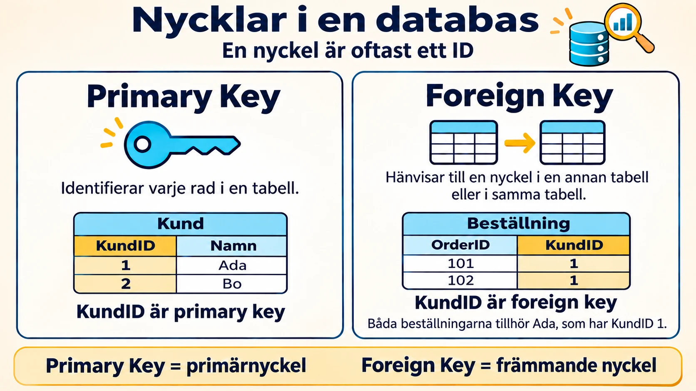
Nycklar
Hur vet databasen vilken kund en order tillhör? Med nycklar.
| Customers | |
|---|---|
| Id (PK) | Name |
| 1 | Ada |
| 2 | Bo |
| Orders | ||
|---|---|---|
| Id (PK) | OrderDate | CustomerId (FK) |
| 10 | 2026-11-02 | 1 |
| 11 | 2026-11-05 | 1 |
| 12 | 2026-11-06 | 2 |
| Databas | C# / OOP |
|---|---|
| Primärnyckel (PK) – identifierar en rad unikt | Objektets identitet. Två objekt kan ha samma namn men är ändå olika objekt. |
| Främmande nyckel (FK) – pekar på en PK i en annan tabell | En referens: order.Customer |
| Flera rader med samma FK | En List<Order> i kunden |
I C# pekar ett objekt direkt på ett annat. En tabell kan inte lagra en referens – därför sparar vi kundens Id i ordern. Ada har ordrar 10 och 11, Bo har order 12.
UML-klassdiagram eller ER-diagram?
UML-klassdiagram – hur programmet är byggt
ER-diagram – hur datan lagras
classDiagram
direction LR
class Customer {
+int Id
+string Name
+List~Order~ Orders
+PlaceOrder() Order
}
class Order {
+int Id
+DateTime OrderDate
+Customer Customer
}
Customer "1" --> "0..*" Order : lägger
%%{init: {"er": {"layoutDirection": "LR"}}}%%
erDiagram
CUSTOMER ||--o{ ORDER : "lägger"
CUSTOMER {
int Id PK
string Name
}
ORDER {
int Id PK
date OrderDate
int CustomerId FK
}
| UML-klassdiagram (OOP) | ER-diagram (databas) | |
|---|---|---|
| Beskriver | Klasser i programmet | Tabeller i databasen |
| Innehåll | Egenskaper och metoder | Bara attribut – data, inget beteende |
| Koppling | Referens och List<T> | Främmande nyckel |
| Antal | 1, 0..* | Rak linje = en, kråkfot = många |
| Många till många | En lista på varje sida | Kopplingstabell |
| Arv | Finns: class Dog : Animal | Finns inte direkt – måste lösas med tabeller |
ER-diagram ↔ klasser i C#
Du har redan ritat UML-klassdiagram. Ett ER-diagram är nästan samma sak:
| ER-diagram | Databas | C# |
|---|---|---|
| Entitet | Tabell | Klass |
| Attribut | Kolumn | Egenskap (property) |
| En rad | Rad | Ett objekt |
| Relation | Koppling mellan tabeller | Referens till ett annat objekt |
| "Många"-sidan | Flera rader | List<T> |
Samma databasmodell i C#
erDiagram
CUSTOMER ||--o{ ORDER : "lägger"
CUSTOMER {
int Id
string Name
string Email
}
ORDER {
int Id
date OrderDate
}
class Customer
{
public int Id { get; set; }
public string Name { get; set; }
public string Email { get; set; }
public List<Order> Orders { get; set; } = new();
}
class Order
{
public int Id { get; set; }
public DateTime OrderDate { get; set; }
public Customer Customer { get; set; }
}Entiteten blir en klass, attributen blir egenskaper och relationen blir en referens. I databasen blir referensen en främmande nyckel – på onsdag skapar vi tabellerna på riktigt.
Många till många – i ER och i C#
erDiagram
STUDENT }o--o{ COURSE : "läser"
STUDENT {
int Id
string Name
}
COURSE {
int Id
string Title
}
class Student
{
public int Id { get; set; }
public string Name { get; set; }
public List<Course> Courses { get; set; } = new();
}
class Course
{
public int Id { get; set; }
public string Title { get; set; }
public List<Student> Students { get; set; } = new();
}I C# räcker det med en lista på varje sida.
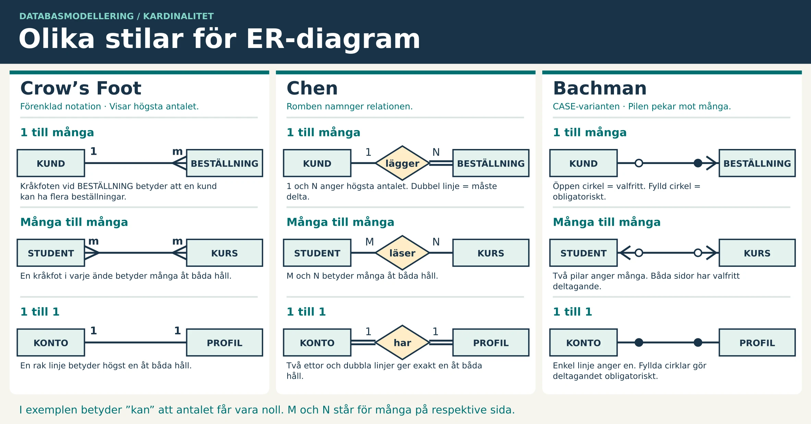
Mer specifik kråkfot – olika varianter av relationer
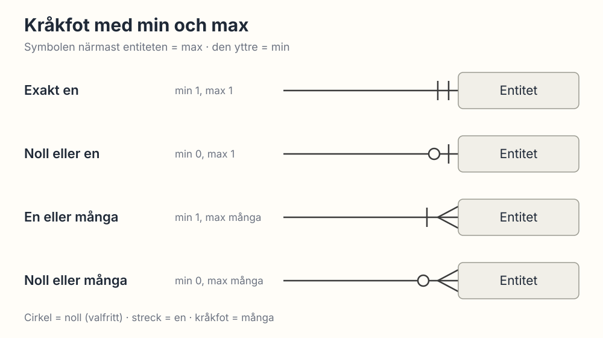
Övning: en och en
Gör ett ER-diagram för ett enkelt exempel. Välj ett från listan – eller hitta på ett eget.
| Exempel | Entiteter |
|---|---|
| Skola | Klass, Elev |
| Musikapp | Spellista, Låt |
| Fotbollslag | Lag, Spelare |
| Blogg | Inlägg, Kommentar |
| Djurklinik | Ägare, Husdjur |
| Bilregister | Person, Bil |
| Restaurang | Meny, Rätt |
| Filmsajt | Film, Recension |
Rita två entiteter med några attribut var. Ge varje entitet en primärnyckel och rita relationen – kråkfot på många-sidan. Fråga åt båda hållen: "Hur många … kan en … ha?"
Gruppövning: ER-modellering
Sammanfattning
- En relationsdatabas sparar data permanent i tabeller med rader och kolumner.
- SQL (Structured Query Language) är språket man ställer frågor till databasen med, t.ex.
SELECT Titel FROM Bok; - Relationer är 1–1, 1–N eller m–m.
- Primärnyckeln identifierar en rad. Främmande nyckeln är databasens version av en referens i C#.
- UML beskriver programmet (med metoder), ER beskriver datan (bara attribut).
- Ett ER-diagram är ritningen: entitet = klass, attribut = egenskap, relation = referens.
- På onsdag: från modell till riktiga tabeller i SQL Server.
Nu: lektionssidan – läs igen och fortsätt med ditt ER-diagram.
Piltangenterna byter bild ·